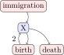
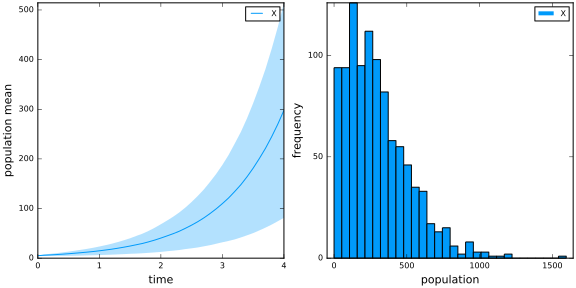
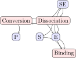
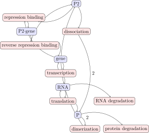

Examples
Birth-Death-Immigration Process
Kendall's process is a birth-death-immigration process describing the dynamics of a population using a continuous-time Markov chain. Individuals in the population behave as particles that reproduce at a rate $\alpha$, decay at a rate $\mu$, and immigrate into the population at a rate $\nu$.
model = Network("Kendall's Process")
model <= Species("X", 5)
model <= Reaction("birth", 2.0, "X --> X + X")
model <= Reaction("death", 1.0, "X --> 0")
model <= Reaction("immigration", 0.5, "0 --> X")
fig = visualize(model)
result = simulate(model, algorithm=SSA, time=4.0, epochs=40, trials=1000)
plot(
meantrajectory(result),
freqhistogram(result, 4.0),
layout = 2,
size = (800,400)
)
Enzyme Kinetics
Michaelis-Menten enzyme kinetics is a stepwise process combining first- and second order reactions to describe the conversion of a substrate into a product. An enzyme $E$ binds to a substrate $S$ to form a complex $SE$. Conversion does not happen immediately, so $SE$ may revert to its two components or result in a product $P$ and enzyme $E$.
model = Network("enzyme kinetics")
model <= Species("S", 301)
model <= Species("E", 100)
model <= Species("SE", 0)
model <= Species("P", 0)
model <= Reaction("Binding", 0.00166, "S + E --> SE")
model <= Reaction("Dissociation", 0.0001, "SE --> S + E")
model <= Reaction("Conversion", 0.1, "SE --> P + E")
fig = visualize(model)
result = simulate(model, algorithm=SSA, time=50.0, epochs=100, trials=1000)
plot(
meantrajectory(result),
freqhistogram(result, 50.0, select=["S"]),
freqhistogram(result, 50.0, select=["E"]),
freqhistogram(result, 50.0, select=["SE"]),
freqhistogram(result, 50.0, select=["P"]),
size = (800, 600),
layout = @layout [a{0.5h}
grid(2,2)]
)
Auto-Regulatory Gene Network
The influence of noise at the cellular level is difficult to capture in deterministic models. Stochastic simulation is appropriate for the study of regulatory mechanisms in genetics, where key species may be present in low numbers.
function autoreg(;k1=1.0, k1r=10.0, k2=0.01, k3=10.0, k4=1.0, k4r=1.0, k5=0.1, k6=0.01)
model = Network("auto-regulation")
model <= Species("gene", 10)
model <= Species("P2_gene", 0)
model <= Species("RNA", 0)
model <= Species("P", 0)
model <= Species("P2", 0)
model <= Reaction("repression binding", k1, "gene + P2 --> P2_gene")
model <= Reaction("reverse repression binding", k1r, "P2_gene --> gene + P2")
model <= Reaction("transcription", k2, "gene --> gene + RNA")
model <= Reaction("translation", k3, "RNA --> RNA + P")
model <= Reaction("dimerization", k4, "P + P --> P2")
model <= Reaction("dissociation", k4r, "P2 --> P + P")
model <= Reaction("RNA degradation", k5, "RNA --> 0")
model <= Reaction("protein degradation", k6, "P --> 0")
return model
end
model = autoreg()
fig = visualize(model)
result = simulate(model, algorithm=SSA, time=1000.0, epochs=500, trials=100)
plot(
meantrajectory(result, select=["P", "P2"]),
freqhistogram(result, 1000.0, select=["P"]),
freqhistogram(result, 1000.0, select=["P2"]),
layout = @layout [a{0.5h}
grid(1,2)]
)